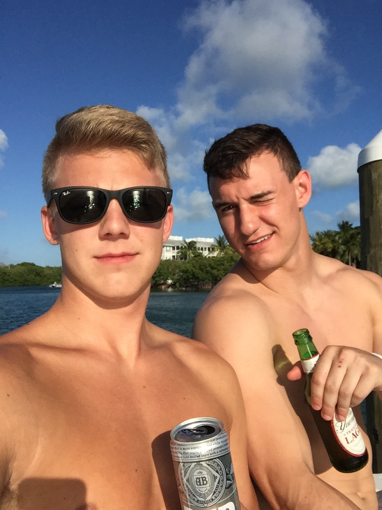

About Buddy Critiques
Founded in 2014, Buddy Critiques has been the most cherished podcast avaliale in the U.S.
Buddy Critique's Founders
About the founders
- They really enjoy beer
- They've been bestfriends since birth
- They are kickass kareoke singers
Buddy Critiques
Some of the best episodes they have produced have been straight from the heart. Click on the links below to put some laughter in your ears: